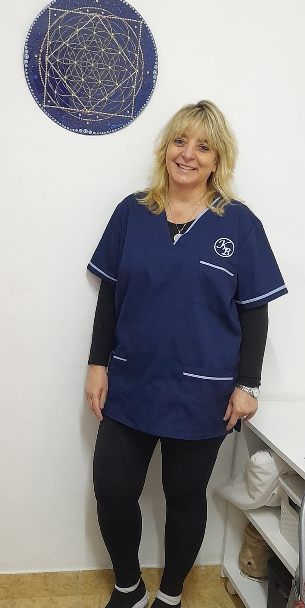
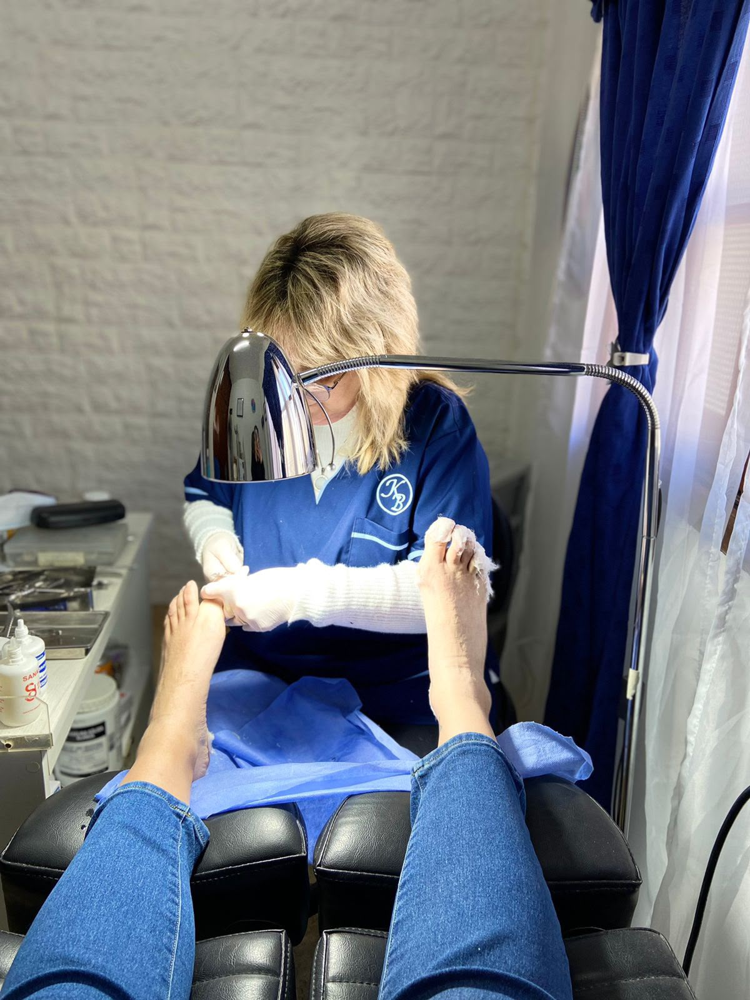
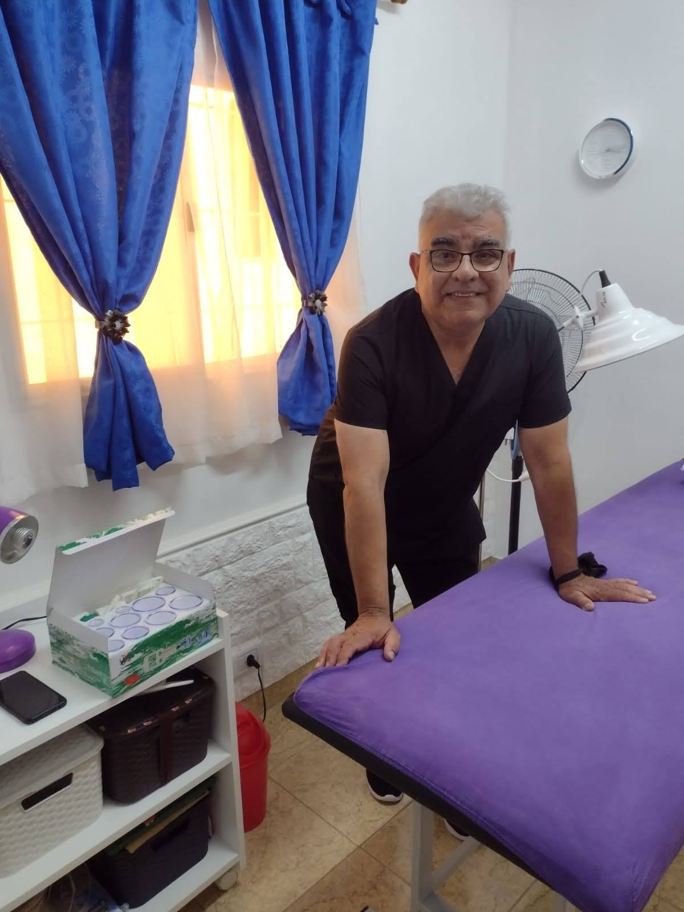
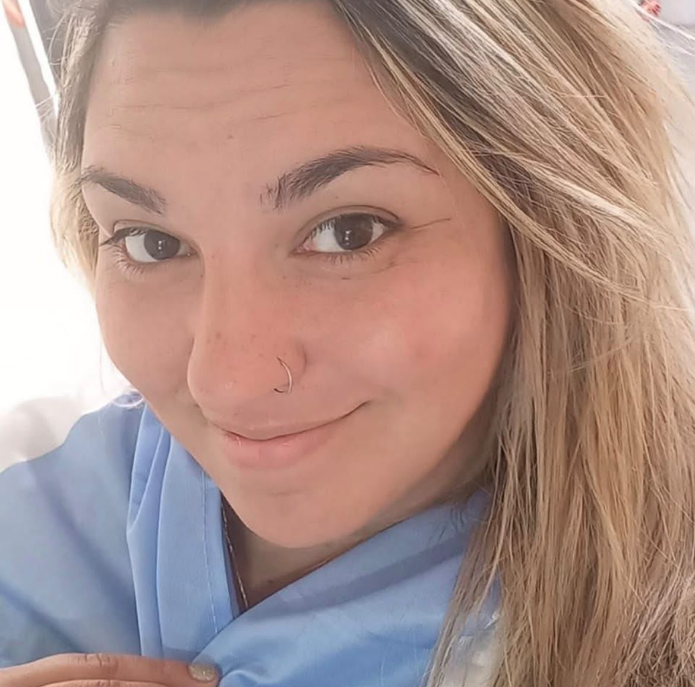
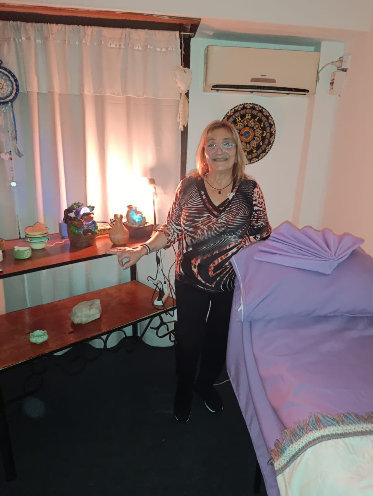
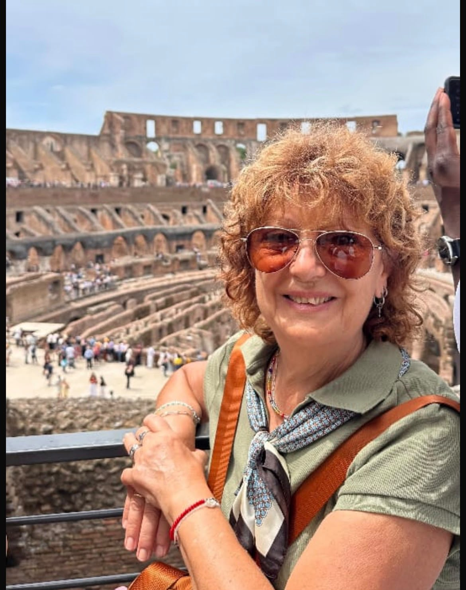
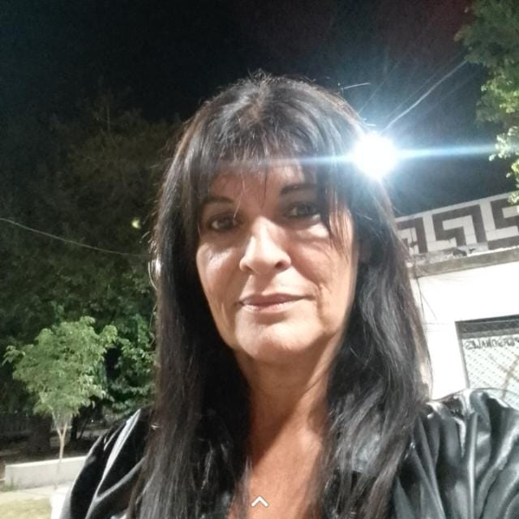

Podología
Cuidado técnico y preventivo de tus pies, con formación UBA y atención personalizada en cada sesión.
KB es el espacio de Karina Beatriz Ozper, donde la podología, la reflexología, los masajes y el tejido se encuentran para acompañarte con conocimiento, calidez y calidad humana.
Respondemos por WhatsApp de lunes a sábado.
Cuidado técnico y preventivo de tus pies, con formación UBA y atención personalizada en cada sesión.
Terapia que trabaja puntos reflejos del pie para aliviar tensiones y restaurar el equilibrio del cuerpo.
Sesiones para liberar tensión muscular y recuperar la calma, adaptadas a lo que tu cuerpo necesita.
Un espacio de encuentro para aprender, crear con las manos y desconectar en compañía.
Cada sesión combina formación técnica con atención personalizada, pensando en la salud y la comodidad de tus pies a largo plazo.
Evaluación del estado de tus pies, corte y cuidado de uñas, remoción de callosidades y durezas, y recomendaciones para el cuidado diario.
En general se recomienda cada 4 a 6 semanas, aunque puede variar según cada caso y el tratamiento indicado.
Sí, ofrecemos atención especializada para el cuidado del pie diabético, con las técnicas y precauciones adecuadas.
Preferimos coordinar el turno por WhatsApp para asegurarte un horario, pero podés consultar disponibilidad para el mismo día.
La reflexología estimula puntos reflejos ubicados en los pies, vinculados a distintos órganos y sistemas del cuerpo, buscando equilibrio general.
Es una terapia que estimula puntos reflejos del pie vinculados a distintos órganos, buscando equilibrio y bienestar general.
Generalmente entre 45 y 60 minutos, dependiendo de lo que necesites trabajar.
No, es una técnica suave. Puede haber algo de sensibilidad en ciertos puntos, pero no debería doler.
Depende de cada persona, pero muchas eligen una sesión mensual para sostener sus beneficios.
Trabajamos distintas técnicas según lo que tu cuerpo necesite: descontracturar, activar la circulación o simplemente relajarte.
Si tenés contracturas puntuales, el descontracturante; para relajarte en general, el relajante; y el drenaje linfático ayuda a eliminar líquidos retenidos.
Entre 30 y 60 minutos, según el tipo de masaje elegido.
No, nosotros nos encargamos de todo lo necesario para la sesión.
Contanos tu historial de salud antes de la sesión para adaptar la técnica a tu caso.
Encuentros pensados para aprender y disfrutar del tejido, ya sea que estés arrancando de cero o quieras perfeccionar tu técnica.
No, las clases están pensadas para todos los niveles, incluyendo quienes recién empiezan.
Te contamos qué necesitás antes de la primera clase, para que vengas con todo listo.
Coordinamos la frecuencia según el grupo, generalmente de forma semanal.
Son grupos reducidos para poder acompañar bien a cada una.
La reflexología parte de la idea de que cada zona del pie se conecta con un órgano o sistema del cuerpo. Arrastrá el pie 3D para girarlo y tocá un punto para descubrir qué trabaja.
Cada zona se conecta con una parte del cuerpo. Girá el modelo y tocá los puntos de colores para descubrir cuál es cuál.
La reflexología es una terapia complementaria de bienestar y no reemplaza el diagnóstico ni el tratamiento médico profesional.
Modelo 3D "Foot CT scan" por doorbin, vía Sketchfab — licencia CC BY 4.0.


KB nace con el propósito de brindar un lugar de atención y bienestar, integrando diferentes disciplinas en un mismo espacio. Karina reúne formación, experiencia y una profunda vocación por el cuidado y el bienestar de las personas — y le pone su sello a cada rincón de este proyecto.
Fundadora de Consultorio KB. Técnica Podóloga (UBA) y Reflexóloga (Universidad del Salvador).

Masaje descontracturante y deportivo para aliviar contracturas y mejorar el rendimiento muscular. Masaje relajante para bajar las revoluciones y salir liviano.

Masaje descontracturante: libera tensión muscular y mejora la movilidad. Drenaje linfático: favorece la eliminación de líquidos. Masaje relajante: disminuye el estrés para un bienestar profundo.

Estimula los puntos reflejos del pie para mejorar la circulación, bajar el estrés y devolverle el equilibrio a todo el organismo.

Sesiones de reflexología pensadas a medida de cada paciente, con foco en aliviar tensiones acumuladas y recuperar energía.

Enseña crochet y tejido a dos agujas desde cero hasta técnicas avanzadas, en grupos reducidos y a puro disfrute manual.
Por lo que hacemos, en cada una de las disciplinas del espacio.
Con tu proceso, tus tiempos y los resultados que buscamos juntos.
La forma en que te acompañamos, tan importante como la técnica.
Completá el formulario y te escribimos por WhatsApp con todo ya armado, listo para confirmar.
Es un pedido de turno, no una confirmación automática — te respondemos por WhatsApp para cerrar el día y horario.